|
Inicio
Bibliografía
Noticias
Hangar
Actividades
Cursos
Comisión
Fotos
Videos
Ubicación
Contáctenos
Links
|
|
Manual del Vuelo a Vela
Wolf Hirth - 1942
El vuelo
por Heinz Kensche
La evolución de los vuelos de concurso
1º Parte
por HANS JACOBS
Daría lugar a una enumeración
demasiado larga el considerar el estado actual del velero de concurso como producto de la
evolución de los aparatos de esa clase que han ido surgiendo año tras año desde el
principio del vuelo a vela. En el reducido espacio para ello disponible no es posible
hacer ni una crítica ni una apreciación, sino solamente se puede intentar dar una
visión de conjunto sobre los veleros más importantes que han aparecido desde los
comienzos del vuelo sin motor y la influencia que han tenido en los aparatos que se han
construido después. Además, se describirán con detalle los veleros que actualmente se
utilizan en los concursos y cuyos proyectos están inspirados en las directrices que
resultaron ya desde el principio de la evolución de tales aparatos, no siendo posible la
enumeración detallada de todos los veleros que han llegado a ser construidos: la
descripción completa se hará oportunamente a propósito de otros temas del asunto de
esta obra.
Las influencias más importantes que han actuado sobre los
veleros actuales resultan de tres grupos de aparatos: de los aviones de Klemperer, de
Aguisgrán; de los aviones del Akaflieg de la Escuela Superior Técnica de Hannover, y de
los del Akaflieg de Darmstadt, a los que se añaden los aparatos del Akaflieg de Munich,
el Grupo de pilotos de académicos de Breslau, etc. Más tarde se marcaron dos grandes
líneas (junto a las cuales el grupo de Darmstadt continuó su evolución propia), que
fueron las que dieron la pauta para la construcción de veleros de concurso, siendo esas
líneas: una, la resultante de los tipos de la Sociedad Rhön -Rossitten, hoy
transformada en el establecimiento alemán de investigación para el vuelo a vela, y otra,
la de los aparatos construidos por Wolf Hirth.
Lo que no puede admitirse es
calificar de veleros de concurso, con el sentido que hoy se da a esta denominación, a los
aparatos que en los comienzos del vuelo a vela sirvieron para obtener las primeras marcas
de importancia que entonces se consiguieron, pues tales aparatos sólo pueden ser
considerados como veleros de entrenamiento, aunque de ellos se hayan derivado después,
aerodinámica y constructivamente, los veleros de concurso propiamente dichos.
También se han construido
fuera de Alemania una serie de veleros que no han ejercido influencia sobre los tipos
alemanes, los cuales no serán objeto de descripción detallada.
Una directriz constructiva que apareció como de
significación muy marcada, en los primeros tiempos de vuelo sin motor, fue la del avión
con ala de mando propio, es decir, el mando longitudinal para variar el ángulo de ataque
del ala, conseguido ordinariamente por el timón de altura, sustituido en ese tipo por
variación directa del referido ángulo de ataque, lo que permitía poder obtener esa
modificación en tiempo muy breve y hasta bruscamente. La idea fundamental de este sistema
no es otra que el aprovechamiento del efecto Knoller-Betz para hacer posible el vuelo a
vela dinámico. Sin embargo, los aparatos de este tipo evolucionaron en seguida hacia los
de mando normal que existían contemporáneamente, de modo que tales aparatos quedaron sin
importancia histórica respecto a la evolución del actual velero de concurso. (Se alude aquí al vuelo a vela o
sustentación sin motor realizado aprovechando las
variaciones de intensidad de viento, que es el verdadero vuelo a vela dinámico que
seguramente ejercitan las aves veleras que saben igualmente aprovechar el vuelo a vela
estático.
A este efecto conviene aclarar
algo mas los conceptos. El vuelo a vela, aprovechando ascendencias (véase el capítulo
dedicado a este vuelo en la obra de esta editorial El hombre vuela), que es el
único género de vuelo a vela en el que se ha llegado a hacer todo lo mucho que se ha
hecho en este género de aviación, es el vuelo estático; el velero desciende
continuamente en planeo, pero como el aire sube lo mismo o más que baja el velero,
resulta éste conservando o ganando altura; la habilidad de mando o pilotaje es así
únicamente la de buscar las ascendencias, lo que no es poco.
Pero hay otro género de vuelo
a vela, que no se ha desarrollado, que es el vuelo a vela dinámico y que consiste
en lo siguiente:
El viento no es constante,
sopla con rachas: la racha es un cambio brusco de velocidad; a la racha sigue la pausa, en
cuyo momento el viento cae después de haber soplado con mas fuerza en la racha. Pero el
avión tiene inercia y, en virtud de ello, sigue con su velocidad sin poder
acomodarse instantáneamente a las variaciones que
experimenta el viento y esta inercia, que es un efecto típicamente dinámico, puede
compensar el peso, y ¿ cómo ?: ganando energía potencial, que es como decir altura,
durante la racha y ganando velocidad o energía cinética en la pausa, para lo que es
preciso aumentar bruscamente el ángulo de ataque al venir la racha, es decir, encabritar
y disminuirle o picar, en la pausa, y esto solo puede hacerse con un mando instantáneo,
como el que resulta de hacerlo con las mismas alas. Sin embargo, esta directriz, como se
dice en el texto, no ha sido explotada.-N. del T.).
Puede mirarse como primer término de la serie de los
veleros que dieron lugar al tipo de concurso, el « Schwarze Teufel », de Klemperer
(Aquisgrán), miembro de la Asociación para el vuelo científico, con el cual Klemperer
fue vencedor en el primer concurso del Rhön de 1920, haciendo un vuelo de 1,8 km. Fue el
primer velero con ala en voladizo, de tres largueros y una envergadura de 9,5 m.; sus
características figuran en la tabla de tipos.
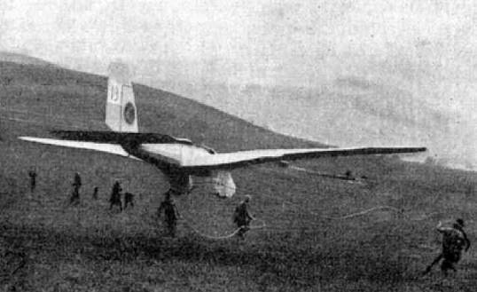
Fig. 26. El « Schwarze Teufel », pilotado por Klemperer en el Rhön
Es de notar su construcción como monoplano de ala baja y el
estar provisto de dos soportes para los patines con revestimiento aerodinámico; todo él
es extraordinariamente ligero; en su construcción se emplearon, además de los materiales
corrientemente usados hoy, el cartón y el bambú. El peso unitario del ala era, en este
avión, de 1,6 kg/m.2: un valor que resulta actualmente inasequible ante las
exigencias modernas en resistencia y rigidez.
El concurso siguiente de 1921 dio lugar, como continuador
del « Schwarze Teufel », al « Blaue Maus » del mismo grupo, siendo pequeñas las
modificaciones de este aparato respecto al primero: el piloto, que en el « Schwarze
Teufel » sobresalía mucho del fuselaje y estaba expuesto así libremente a la corriente
de aire, estaba en el nuevo aparato más bajo y, por tanto, mejor. El peso con equipo
bajó de 65 a 53 kg. Con el « Blaue Maus » hizo Klemperer el primer vuelo de duración,
llegando a los trece minutos.
En el mismo año hizo su aparición el « Vampyr », el
cual de golpe marcó ya las directrices del velero de concurso, tanto desde el punto de
vista aerodinámico como constructivo, y, como había sido concebido sobre la base de
obtener un avión de pequeña velocidad de descenso, resultó siendo necesariamente un
aparato que ofrecía muy poca resistencia al aire. En él resultaban abandonados todos los
otros tipos de biplanos, aviones atirantados, fuselajes de canoa y análogos para
construir, quizá ante el ejemplo del « Schwarze Teufel », un monoplano de ala alta, en
voladizo, de 12,6 m. de envergadura, con el asiento del piloto debajo de las alas. El
espacio destinado al piloto iba carenado con cuero, de modo que el piloto solamente tenía
expuesta la cabeza a la corriente aérea (véase fig. 4).
Es de señalar, como circunstancia importante respecto a
las posibilidades de progreso que este tipo representaba, el modo de construcción del
ala, que era monolarguera, rígida ante los efectos de torsión por el cerquillo de
contrachapado que reforzaba el borde de ataque, mostrándose así el camino para proyectar
y construir alas de gran envergadura, con suficiente rigidez a la torsión y a la
flexión. Toda la importancia de esta novedad está dicha con hacer constar el hecho de
que todos los veleros de concurso actuales son de ala monolarguera provista de cerquillo
de contrachapado en el borde de ataque.
El mando transversal del aparato se hacía por medio de
alerones. El ala era de tres partes; modo de construcción obligado, tanto por razones de
montaje y transporte como por razones estáticas y que ha perdurado durante mucho tiempo.
El ala estaba apoyada sobre el fuselaje por tres puntos y arriostrada por medio de dos
tornapuntas que iban del fuselaje al larguero, dando así una protección contra los
aterrizajes de ala. El fuselaje era poligonal (Cuadrado por detrás de las alas y
hexagonal en la proa. - N. del T.) y con el hocico muy bajo (Dicho de otro
modo, levantado de popa. - N. del T.) forma que después se repitió en
otros muchos tipos. Primitivamente se usaba esta forma atendiendo a consideraciones
aerodinámicas, y hoy se conserva el fuselaje un poco caído hacia adelante para procurar
mejores condiciones de vista despejada. El « Vampyr » iba provisto, para el aterrizaje,
de tres balones de cuero giratorios, los cuales eran suficientemente resistentes y
representaban un progreso frente a los trenes de aterrizaje con ruedas o el patín doble,
como tenía el «Schwarze Teufel», pues se creyó largo tiempo que, por razones de buen
aterrizaje, no se podía prescindir de dos balones u órganos análogos dobles, hasta que
esta creencia quedó desvanecida por el hecho de tener éxito los aparatos provistos de un
solo patín central.
Este proyecto de aparato que rompía la tradición fue
obra del profesor Madelung, y fue construido en colaboración con Blume, Hentzen y Martens
en el Akaflieg de la Escuela Superior Técnica de Hannover. Que este modo de construir era
bueno, se demostró ya en el concurso de 1921, en el cual el aparato pilotado por Martens,
además de un vuelo de 7,5 km. desde la Wasserkuppe a Hilders, hizo una serie de vuelos de
más de diez minutos de duración. En el concurso de 1922, en el que otra vez participó
el «Vampyr» con algunas modificaciones, Martens hizo con él su célebre vuelo de una
hora y Hentzen el vuelo de tres horas diez minutos, que fueron los primeros grandes vuelos
ejecutados a vela. Desde 1921 sirvió el «Vampyr » de modelo para otros veleros que
aparecieron en años posteriores. Sin embargo, ello vendrá después. Como ejemplo de lo
mucho que influyó el « Vampyr», contaremos una pequeña historia:
Espenlaub, que tan importante papel desempeñó en muchas
historietas antiguas del Rhön, necesitaba a toda costa para un nuevo aeroplano el perfil
del «Vampyr», el cual estaba cuidadosamente conservado en secreto por los constructores
de ese aparato. Espenlaub fue a buscar el perfil, protegido por la noche y la niebla se
arrastró, provisto de su placa de contrachapado y su lápiz, hasta el tenderete donde se
hallaba el aparato y sacó la correspondiente plantilla del perfil. Mientras Lippisch, que
entonces trabajaba como constructor en la casa Weltensegler, dibujaba diferentes perfiles
para un velero y hablaba de ello con Espe, le dijo éste, después de algunos titubeos:
- ¡ Bah !
Todo esto no es nada; vea usted este perfil - y le enseñó la placa de contrachapado con
el dibujo, que tenía escondida...
Como ya se
ha dicho, se hicieron algunas modificaciones en el «Vampyr» para el concurso de 1922,
siendo la principal la de llevar muy atrás el borde posterior de las alas, en los
extremos (fig. 27) y transformar en alabeo los alerones de mando transversal.
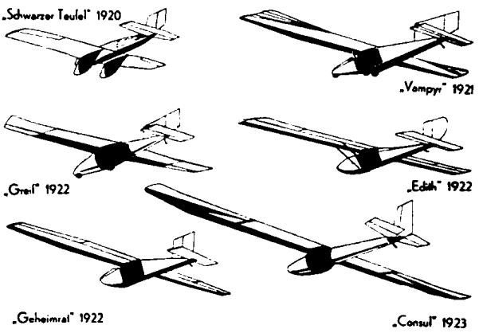
FIG. 27. Veleros de
los años 1920 a 1923
Como continuación de las
construcciones del Grupo de Hannover, siguió al « Vampyr» el « Greif » 1922, firmado
por Martens y el profesor Pröll. Probablemente habría representado el « Greif » un
buen paso hacia delante con su fuselaje redondeado, de pequeña sección transversal, y
sus dos balones en el mismo plano longitudinal, como órganos de aterrizaje, pues todo
ello habría dado lugar a una gran mejora en las condiciones aerodinámicas, si no hubiese
tenido en su contra que la cabeza del piloto iba en un hueco hecho en la nariz del ala, lo
que obraba muy perjudicialmente, puesto que rompía la corriente aérea precisamente en la
región media del ala.
Merece citarse a continuación del «Vampyr » un aparato
atrevido que apareció en 1922 y que, por primera vez, presentaba un ala en voladizo, de
17 m. de envergadura; aparato firmado por Espenlaub-Balzholz y que hizo que los
constructores se atreviesen con las grandes envergaduras, como patentizó pronto el
aparato «Konsul », del grupo de Darmstadt, en 1923. El « E 3 » representa desde el
punto de vista constructivo un hito en la historia de los veleros, pues era la
continuación de las directrices del «Vampyr» con una gran envergadura y evitando toda
la resistencia perjudicial de arriostramientos, atirantados y demás elementos
complementarios, para conseguir buenas características.
Es necesario hacer constar aquí que los concursos del
Rhön, en ese tiempo, eran la organización tipo para conseguir el máximo del estimulo en
el progreso: la práctica de vuelo con los aparatos daba ocasión a discusiones y
conferencias científicas, que a su vez daban lugar a nuevos estímulos y a nuevos caminos
que podían seguirse. Esta significación especial de la Wasserkuppe como centro del
progreso fue desde luego cortada cuando el vuelo remolcado permitió la extensión del
vuelo a vela y la realización de vuelos de marca en todas las partes de Alemania.
El Akaflieg de Darmstadt fue al concurso del Rhön del ano
1922 con los aviones « Edith » y «Geheimrat», con los que ese grupo inició una
evolución en sus veleros que quedó por mucho tiempo dando la pauta para la construcción
de veleros de concurso.
El « Edith » es
un velero de construcción sencilla, monoplano de ala alta con tornapuntas, alas
bilargueras, fuselaje poligonal, con abertura superior que lleva la unión con las alas y
con patín de aterrizaje normal. El «Edith» muestra ya en su construcción las
tendencias que luego se acentuaron en el económico «Bremen», de Lippisch y Stamer y que
dieron lugar al aparato de los mismos autores « Prüfling » que fue muy empleado en los
años 1926 a 1930 como apropiado para ser construido por los mismos grupos de aficionados.
El «Geheimrat» es un tipo muy influido por el
«Vampyr», aunque haya que clasificarle entre los aparatos de ala de mando propio, pues
el timón de altura puede sólo mandarse como auxiliar mediante una palanca de carrera muy
limitada. Son de señalar dos vuelos realizados con este aparato: el uno pilotado por
Hackmack de 1,30 horas de duración y el otro, de 320 m. de altura sobre el punto de
salida; pero desde el punto de vista de la evolución de los veleros, no ofrece nada
especial.
El aparato ya citado del grupo de Darmstadt, el « Konsul
», un monoplano en voladizo de 18,7 m. de envergadura que apareció en el concurso de
1923, tenía ya todos los caracteres de los actuales veleros de concurso: gran
envergadura, fuselaje redondeado, mando normal, cabina para el piloto, etc. Al año
próximo, es decir en 1924, surgió el « Roemryke-Berge », construido por Schatzky
(Akaflieg Darmstadt) para la Sociedad de Navegación aérea de Hesse; con el cual llevó a
cabo Nehring el primer gran vuelo de distancia.
En los años 1924-1925 fue ardientemente combatida con
palabras y con escritos la idea del vuelo a vela y en particular la de construcción de
aparatos; se consideraba como cerrado el ciclo de las posibilidades del vuelo a vela y de
la evolución de los veleros con los aparatos « Konsul », « Roemryke Berge », etc., y
no se creía en posibles superaciones de la marcas de vuelo conseguidas, por medio del
perfeccionamiento en los tipos de velero existentes. Estas opiniones eran hasta cierto
punto acertadas: con los aviones que había (salvo algunos defectos parciales) habría
sido posible realizar las mismas proezas que las que pueden hacerse con los velero
actuales; lo que faltaba era el conocimiento claro de otras posibilidades del vuelo a vela
aprovechando todos los manantiales de energía que existen en el océano aéreo. Tampoco
superaban los pilotos, volando sólo con apoyo orográfico los vuelos de duración y
distancia que se habían realizado así como igualmente no eran superadas las alturas a
que se había llegado sobre el punto de salida. Por tanto, había que dirigir los
esfuerzos hacia otros derroteros de la construcción por medio de concursos técnicos que
llevasen el vuelo a vela a un ulterior progreso; de esta necesidad salió el fundar en
1925 el Instituto de Experimentación, anexo a la Sociedad Rhön-Rossitten, con la misión
de investigar y dar realidad a esos nuevos derroteros para el progreso del vuelo a vela.
El año 1926 trajo consigo una gran revolución y el
comienzo de un nuevo y arrollador movimiento ascendente del vuelo a vela y precisamente
toda esa transformación se debió a las marcas de Nehring, volando en el «Roemryke
Berge» y de Max Kegel con el « Kegel ». Por ello es necesario detallar estos vuelos,
que tanta influencia tuvieron sobre la evolución del vuelo de concurso. Hicieron ver
claramente que era acertado considerar como sin esperanza el progreso de los veleros,
puesto que con los aparatos de que se disponía era posible realizar mayores proezas
aprovechando con destreza las ascendencias orográficas y el apoyo en las nubes. El vuelo
de Kegel en una tormenta desde la Wasserkuppe a Gompertzhaüsen (55 km.) hizo ver la
existencia de poderosas ascendencias en la atmósfera que eran independientes del relieve
orográfico. El vuelo de Nehring, desde Wasserkuppe a Milseburg, de 5,5 km. de distancia,
con regreso a la Wasserkuppe, era brillante prueba de lo que se podía hacer en el vuelo a
vela, mostrando, además, que, supuesta la necesaria habilidad del piloto, el instrumental
que basta entonces se había puesto en uso bastaba para resolver los problemas que
planteaba el vuelo.
En el año siguiente, Nehring dio un giro científico
especial al vuelo con apoyo orográfico, que muchos de los pilotos de velero de estos
días desconocen. El vuelo de distancia se mejoró de 60 km. (1927) a los 70 km. (1928)
con el velero «Darmstadt». Estos vuelos, de tipo orográfico puro, fueron estudiados y
planeados haciendo el estudio detallado de la comarca, de cada colina, con las diferentes
direcciones posibles del viento, los efectos mutuos de sombra aérea de las laderas, zonas
peligrosas de sotavento etc., todo analizado kilómetro por kilómetro.
Después de esta breve digresión sobre el aspecto más
bien de pilotaje de los vuelos de marca, vamos a volver al estudio de la evolución
técnica, ya que, como se ha dicho, a causa de estas proezas se despertó una gran
actividad en todas partes en ese aspecto. Hofmann, del Akaflieg de Darmstadt, construyó
en 1926 el «Westpreussen», que era otro representante de la escuela de Darmstadt,
perteneciente a la serie de los «Konsul-Roemryke-Berge». El «Westpreussen» era un
monoplano de ala alta en voladizo, de 16 m. de envergadura y con el ala en tres partes,
siendo sus planos muy usados en diferentes puntos de Alemania para su reproducción por
los grupos de aficionados, y algunos aviones de este modelo han estado en vuelo hasta los
años 1933-1934.
En el año 1927 apareció el « Darmstadt II», un velero
monoplano en voladizo, de 19 m. de envergadura, con excelentes características,
construido por el Akaflieg de Darmstadt. Con este aparato pudo Nehring realizar, entre
otros vuelos, el de marca mundial de distancia, de 1927, con 61 km. de recorrido y el de
1928, con 71 km., ambos ejecutados con apoyo orográfico puro (fig. 28).
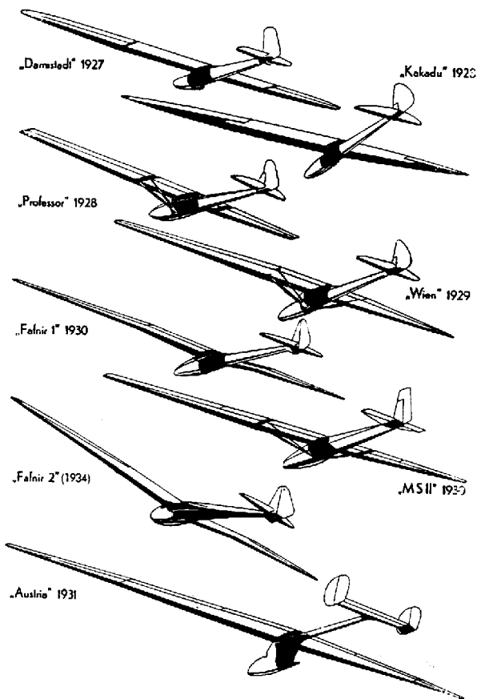
Fig. 28. Veleros de los años 1927 a 1931
El
«Darmstadt» fue proyectado con buena velocidad de descenso y excelente ángulo de
planeo, aun teniendo la carga normal de 14 kg/m.2 de ala. El buen ángulo de planeo, condición que había
de figurar en primer plano, era una exigencia ineludible ante el vuelo en ladera. De una a
otra ladera, había que pasar por zonas sin ascendencia o hasta de componente descendente
de aire, en las cuales la velocidad de descenso era de menos importancia que un buen
ángulo de planeo con gran velocidad. En oposición al «Darmstadt», fue construido en
1933-1934 el «Windspiel», de la misma escuela, el cual se proyectó con miras muy
distintas que las que presidieron la construcción del « Darmstadt ».
En 1928 el Instituto de Experimentación de la RRG,
inició una nueva serie de aparatos veleros.
El vuelo sin motor se había extendido considerablemente en los dos años 1926-1927 ante
los éxitos del Rhön y los de las escuelas de planeo y de vuelo a vela, ya que, por otra
parte, desde ese año 1926 el citado Instituto facilitaba planos de aparatos para
principiantes y para entrenamiento y esta misma expansión trajo consigo el acuciante
deseo de disponer de un velero de concurso que fuese de fácil construcción, algo
parecido a lo que eran el «Zögling» y el «Prüfling» que podían ser construidos por
los mismos grupos de aficionados teniendo solamente los planos.
Atendiendo a esta consideración, salió en 1928 el «
Professor », un monoplano arriostrado con dos tornapuntas en V; ala
de tres partes monolarguera y nariz provista de cerquillo; el fuselaje era hexagonal, sin
que en la construcción de este aparato hubiese ninguna novedad digna de mención, pues el
proyecto hecho por Lippisch atendía más que a otra cosa a conseguir una estructura de
clara comprensión y sencilla ejecución, de modo que los grupos que ya construían los
aparatos para principiantes y los de entrenamiento pudiesen sin nuevas dificultades llevar
a cabo la construcción de ese velero.
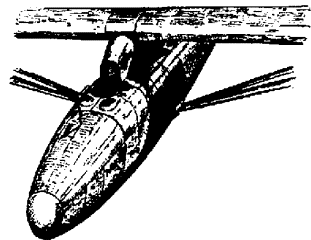
FIG. 29. Giba de unión
del ala al fuselaje en el «Wien»
Esta cuestión de la construcción de aparatos por medio de los
planos de un determinado tipo usado por los grupos de aficionados fue muy discutida en los
años siguientes. Muchos vieron en la construcción de veleros por reproducción de los
planos el fin de la alegría general en la afición al vuelo a vela, y, sin embargo, esa
afición al vuelo sin motor no habría tenido nunca la extensión a que ha llegado en
Alemania, si no hubiese habido la facilidad de reproducción de los tipos por medio de los
planos. Ciertamente que el hecho de poder adquirir planos de un aparato por el simple
abono de su precio ha sido causa de que hayan dejado de hacerse muchos tipos nuevos; pero
lo esencial es que, en cambio, se han dejado de hacer muchos proyectos de legos en la
materia que solamente en raros casos habrían tenido éxito.
Con el «Rhöngeist» (tipo «Professor») demostró
Kronfeld en el concurso del Rhön de 1928, su habilidad como piloto y las buenas
características de este nuevo modelo de aparato.
Del «Professor» pasó Lippisch al «Wien» (fig. 29),
que respecto a aquel representaba un perfeccionamiento en finura aerodinámica; de 16 m.
de envergadura, se fue a los 19 m., y el alargamiento del ala se elevó de 14 a 20, y como
perfil el «Gö 549» de borde de ataque
grueso y de algo más de curvatura. El fuselaje se hizo redondeado y de la mínima
sección transversal posible para economizar la resistencia del aire. Estaba, además,
concebido para obtener una pequeña velocidad de descenso, manteniendo bajo el valor de la
carga superficial del ala con el fin de aprovechar las mínimas ascensiones de la
atmósfera; y que estas propiedades se consiguieron quedó de manifiesto en el concurso
siguiente: cuando todos quedaron inactivos, todavía pudo seguir volando Kronfeld en el «
Wien». Kronfeld mejoró también la marca de distancia de 100 a 150 km. Pasó asimismo
del apoyo orográfico simple a la combinación de éste con el apoyo en las nubes,
aprovechando Kronfeld, por primera vez, esta posibilidad, la cual había sido ya objeto de
estudio por el profesor Georgii como nuevo modo de volar a vela y había sido, además,
motivo de experimentación sistemática volando en las nubes con un avión de motor bajo
la dirección de la RRG.
Esta nueva vía del vuelo a vela puso también en primer
plano la cuestión de los instrumentos de a bordo de los aviones. Hasta entonces se había
volado principalmente con indicador de velocidad y altímetro, pero ahora hubo que añadir
el compás y el variómetro, y el vuelo en las nubes hizo patente la necesidad de contar
también con los instrumentos de vuelo sin visibilidad (fig. 30). Kronfeld fue el primero
que en el concurso de 1928 empleó el variómetro. Con el vuelo en las nubes se tuvieron
nuevos resultados de experiencia y nuevamente fue Kronfeld el primero que llevó en un
velero un paracaídas, y hoy no se concibe hacer un vuelo de concurso sin llevar
ese medio de salvamento.
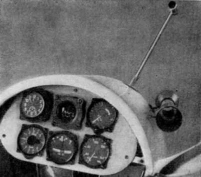
Fig. 30. Tablero de instrumentos de un velero moderno de
concurso (Minimoa)
Descrito
el modelo de velero «Wien», hay que volver otra vez al año 1927. El Akaflieg de Munich
apareció con su primer velero de concurso, el cual mostraba marcadamente el carácter de
«Vampyr», en especial en cuanto a la forma del fuselaje. El «Münchner Kindl»
presentaba novedad en cuanto a la construcción del ala, consistente esa novedad en el
borde de ataque provisto de cerquillo de contrachapado para resistir la torsión y en el
arriostramiento del cerquillo por medio de tacos de refuerzo para soportar los esfuerzos
de flexión. El larguero era del sistema de cajón, compuesto de cordones, tacos y almas
de contrachapado, pudiendo resistir simultáneamente los esfuerzos de flexión y torsión,
mientras que en los otros sistemas corrientes esos esfuerzos eran separadamente resistidos
por el larguero y el cerquillo del ala. Con una acertada asignación de dimensiones, este
sistema de construcción, que utiliza mejor el material, da lugar a una reducción del
peso en vuelo y hasta puede resultar el aparato de mayor rigidez. El «Münchner Kindl»
tenía una envergadura de 15 m. y una superficie de ala de 17,4 m.2.
Puede mirarse como una continuación del «Münchner
Kindl» el « Kakadu », que apareció en 1928, en el que, análogamente a aquél, las
acciones de flexión y torsión eran soportadas por la nariz del ala reforzada con tacos;
las alas tenían 19,2 m. de envergadura, siendo el primer aparato con tales dimensiones,
que las tenía solamente de dos piezas, lo cual representaba una ventaja por ser sencillas
las operaciones de montar y desmontar, como asimismo la organización general y, además,
se necesitaba un herraje menos en el larguero y otros menos para la transmisión del mando
transversal. El «Kakadu» que tomó parte en el concurso del Rhön de 1928 tenía el
fuselaje extraordinariamente grueso y corto, de modo que no eran satisfactorias sus
propiedades de vuelo ni sus características; el tipo que se presentó al año siguiente
tenía ya un fuselaje mejor, más esbelto y de mayor longitud, así que resultaba con
mejores características. En el «Kakadu» fue usado, por primera vez, el perfil «Gö
652» ideado por Lippisch, el cual siguió usándose algunos años por sus buenas
condiciones como perfil de velero, especialmente por las pequeñas velocidades de descenso
que se podían conseguir con él.
En el otoño de 1930 se encontraba en construcción el
aparato «Austria», proyectado por el Akaflieg de Munich, que fue volado por Kronfeld en
los años 1931-1932. Este aparato representaba en sus dimensiones un caso extremo sin
atender a la facilidad de virar ni a la buena manejabilidad del avión, se había buscado
sólo obtener un mínimo de velocidad de descenso y un máximo de coeficiente de planeo;
fines que fueron seguramente alcanzados con este proyecto.
Sin embargo, en
l932, durante un vuelo en nube, el «Austria» perdió las puntas de las alas,
probablemente a causa de vibraciones en ellas y resultó completamente destruido en la
caída que sobrevino. Las exigencias de facilidad de virar, aparte del coste demasiado
elevado, hacen que haya de considerarse casi como de imposible empleo en el vuelo a vela
un aparato de semejantes proporciones.
Sin embargo, el proyecto del «Austria» es interesante
como tema de estudio, así que es necesario considerarle todavía más detenidamente para
apreciar algunos puntos de vista. Se fijó la envergadura en 30 m., atendiendo a obtener
un buen coeficiente de planeo y una pequeña velocidad de descenso ; como perfil se
empleó el « Gö 652», haciéndose las alas de cuatro piezas y en voladizo. Los alerones
de mando transversal, en número de seis, corrían a lo largo de todo el borde de salida
del ala y estaban dispuestos de modo que, independientemente de la palanca de mando,
pudiesen ser reglados por el piloto mediante otra pequeña palanca lateral y con ello se
hacía que para el vuelo rápido resultase el perfil de menor curvatura. El ala era
monolarguera, con largueros secundarios. El contrachapado se extendía hasta el larguero
posterior o hasta el falso larguero, base de los alerones, de modo que toda la sección
transversal, desde el borde de ataque del ala hasta los largueros secundarios, contribuía
a la resistencia a la torsión.
El fuselaje era de una construcción muy notable: el
piloto iba en una especie de barquilla, mientras que las alas se unían a una giba muy
alta que salía de la barquilla, con cuya organización se conseguía que los extremos de
las alas, a pesar de la gran envergadura, resultasen a suficiente altura sobre el suelo
(fig. 7).
La giba se prolongaba hasta la cola por un largo tubo
resistente a la torsión y a la flexión, que servía también de soporte al empenaje de
altura y al timón de dirección, que era doble. Este doble timón podía ser utilizado
normalmente para las viradas, pero también podía servir para rebajar el coeficiente de
planeo, elevando la resistencia al avance, a cuyo efecto podían maniobrarse los dos
timones en sentidos opuestos hasta quedar transversales a la línea de vuelo, actuando
entonces como frenos. También es digno de mención el sistema de unión de las alas, que
resultaba muy práctico, pues era automático, sin necesidad de revestido o tapa, y estaba
constituido por pequeños vástagos taladrados que, mediante una llave cuadrada, se
apretaban enlazando los correspondientes trozos de ala. La superficie era completamente
lisa y sólo tenía el saliente de los pequeños balancines de los alerones y
correspondientes varillas. Los detalles de construcción de este aparato tenían aún
otros muchos puntos interesantes que no caben dentro del marco de esta obra; se dirá, por
fin, que el coste de este avión fue de 30000 marcos.
El doctor Kupper dedujo del «Austria» una serie de
aparatos que no llegaron a tener realidad.
Después del «Wien» vino en el año 1930 el « Fafnir
», que presentaba un aspecto completamente nuevo. Lippisch, al hacer este proyecto,
pensó en una buena unión aerodinámica entre el ala y el fuselaje, idea que, sin
embargo, no llegó a tener solución del todo satisfactoria en ese aparato; sólo
llegó a tenerla en el «Fafnir II».
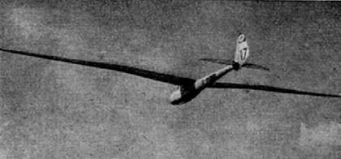
Fig. 31. El « Fafnir » en vuelo, pilotado por Groenhoff
El
«Fafnir» es un monoplano en voladizo, de ala media, con una envergadura de 19 m. y visto
de frente la línea del ala no es recta ni tampoco en V, sino que es quebrada, con silueta
análoga a la de una gaviota, como eran, aunque en otra forma, los aparatos sin cola de
Wenk de los primeros años de vuelo sin motor. Esta ala quebrada tenía por objeto dar al
aparato buena estabilidad de ruta y dejar las puntas de las alas suficientemente elevadas
del suelo. Los extremos de las alas eran de forma trapecial, y, para conseguir buena
estabilidad transversal en el vuelo lento, tenían fuerte alabeo hacia el exterior. En la
región de unión al fuselaje, el perfil empleado era «Gö 652»; en los vértices de los
diedros, el garantizado perfil de velero, «Gö 535», que se transformaba en los extremos
en un perfil « Y », de Clark. En la nariz del ala, que era rígida a la torsión, se
dispuso un larguero secundario, anterior al principal, para conseguir una gran resistencia
a la flexión (figs. 31 y 32).
El piloto va en este aparato protegido por primera vez de
un modo completo dentro del fuselaje: la cabeza resulta protegida contra el granizo por un
revestido de forma curva, hecho de contrachapado, que sale de la unión de las alas y
fuselaje. La primera forma de esa tapa, que venía a quedar en la región central del ala,
no era favorable, pues las ventanillas laterales y el redondeo de enlace a las alas
producían una dislocación de la corriente aérea (fig. 32 a). Estos defectos se evitaron
completamente por la modificación que indica la figura 32 b. Entre los muchos vuelos que Groenhoff hizo con este aparato,
solamente se citará aquí el realizado con apoyo en un frente tormentoso, desde Munich a
Kaaden (272 kilómetros), que fue durante mucho tiempo marca mundial de distancia y que,
en 1932, fue mejorada por Dittmar con el « Fafnir II » llevándola a los 371 km.
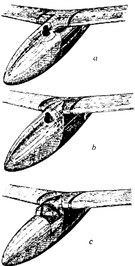 Fig. 32. Unión de
ala y fuselaje sin giba, transformándose en fuselaje de conducción interior. Tipos 1 a 3
En el
concurso de 1932, Groenhoff pretendió empalmarse a un frente tormentoso despegando
defectuosamente de la ladera con viento de cola, así que el fuselaje sufrió un fuerte
golpe en la popa que rompió el timón de dirección y dejó bloqueado el timón de
altura; Groenhoff, que tanto había luchado con él, hizo entonces el último vuelo con su
«Fafnir».
El fuselaje del «Fafnir 1» era como el del «Wien», de
Kronfeld, que para que tuviese la menor sección transversal posible se había hecho a la
medida de Groenhoff. El «Fafnir» después de la caída, fue reconstruido como indica la
figura 32 c, con
lo que perdió su aspecto característico que recordaba un animal antediluviano.
Es digno de notar la longitud que tenían los fuselajes de
los aviones «Professor», «Wien» y «Fafnir», en comparación con los proyectos de los
primeros años, cosa que se hizo así para conseguir que el vuelo fuese agradable respecto
a los movimientos alrededor de los ejes vertical y transversal del avión.
Otro aparato más del ano 1930 fue el « MS II », de
Mayer (Aquisgrán) ; un velero de alta escuela que se derivó del velero de entrenamiento
« MS I ». Los aficionados de Aquisgrán conservaron, en este nuevo proyecto, las
directrices seguidas en el «MS I» de tratar de obtener, con medios sencillos, un avión
de buenas características, y así esos aficionados, con sus dos aparatos, tomaron otra
vez, después de larga pausa, parte activa en el progreso de los veleros.
La construcción de las alas del «MS II» no ofrecía
nada nuevo; el fuselaje se conservó lo más sencillo posible: era poligonal, provisto de
largueros que con diagonales y montantes formaban una estructura de celosía; la zona
posterior del fuselaje iba entelada. Los empenajes de altura y dirección se componían
ambos de planos fijos y timones, resultando extraordinariamente grandes, pues Mayer
quería obtener la mayor estabilidad posible del vuelo en nube, mediante la adecuada
organización de los timones. Mayer realizó con éxito, en 1932, con este aparato una
serie de vuelos con apoyo nuboso muy notables, unos en vuelo recto (nubes en banco y
neforrutas), y otros con vuelo en curva penetrando y atravesando la nube. Según contaba
él mismo, estos vuelos los realizó sin dificultades extraordinarias, manteniendo siempre
la posición normal de vuelo. Los barogramas, que entonces fueron publicados, con su
línea de ascensión continua daban la sensación de que los vuelos estaban ejecutados por
un avión normal de motor.
Con los vuelos de Mayer, cuyos éxitos fueron atribuidos
por él mismo a las buenas propiedades de estabilidad del aparato, surgió por primera vez
el problema siguiente: Para el vuelo en nube, ¿ conviene un aparato con timón de altura
sin plano fijo de cola, o timón con plano fijo ? Es decir, ¿ mucha o poca estabilidad
longitudinal ? Para el constructor es más conveniente el timón sin plano fijo; menos
peso, construcción muy sencilla, más barato. El timón con plano fijo, dicho esto, ya no
tiene más que desventajas. La decisión en esta cuestión sólo puede darla el piloto,
cuando se pronuncie por uno u otro sistema, después de una serie de vuelos sistemáticos
en nubes empleando los dos sistemas de empenaje y estudiando a fondo las ventajas e
inconvenientes de cada uno.
El método de construcción empleado en el fuselaje del «
MS II » no ha podido conservarse en los años siguientes, empleando la madera como
material, puesto que un pequeño desperfecto en una diagonal, en el encolado, dobladura de
algún elemento por un esfuerzo local, hacían que el fuselaje no ofreciese la seguridad
debida durante el vuelo. Solamente el empleo de tubo de acero podía hacer que ese método
de construcción se introdujese en la práctica para los veleros.
En 1930, con una situación meteorológica tormentosa,
como la del concurso de 1923, volaron simultáneamente diecisiete aparatos con apoyo en la
ladera del Oeste; en 1923 se rompieron cinco de los seis aparatos que estaban en vuelo; en
1930, solamente se rompió uno. Seguramente que la habilidad de los pilotos se había
mejorado mucho; sin embargo, también habían progresado los equipos de vuelo; además,
igualmente se habían perfeccionado los detalles de construcción, pues se construía ya
con la experiencia de los años anteriores. Pero todo esto cristalizó en las exigencias
mínimas a la resistencia de los veleros que fueron compiladas y dadas a la publicidad por
la Comisión técnica de los Concursos del Rhön, dándose por primera vez directrices
para la construcción de planeadores y veleros. Estas directrices fueron la base de los
actuales pliegos de condiciones facultativas. En relación a esto, hay que citar, siquiera
sea brevemente, la « Teko » (Nombre comprimido de la «Technische Kommission». - N.
del T.) la cual tuvo a su cargo las pruebas de todo el material de vuelo que se
presentaba a los concursos, desde que empezaron éstos en el Rhön hasta 1933. Se
componía principalmente de hombres que durante largos años habían seguido de cerca la
evolución técnica, de hombres que por sí mismos habían trabajado activamente o en
aerodinámica o en la construcción de aparatos. Hay que reconocer a esta comisión el
mérito de haber contribuido eficazmente a la mejora, conseguida año por año, de la
construcción de los veleros que los grupos de aficionados hacían por sí mismos;
además, de esta comisión salió una organización vastísima que actualmente está
extendida a toda Alemania y que a título honorífico realiza las pruebas de los aparatos,
así como su construcción y la vigilancia continua del estado en que se encuentran tanto
los planeadores como los veleros.
El movimiento del vuelo a vela experimenta constantemente
grandes crisis. En 1931 se ensayó y se introdujo en la práctica corriente el vuelo
remolcado por aviones de motor, con lo que los grandes vuelos se hicieron independientes
de los concursos del Rhön, pues fue posible hacer vuelos de marca en toda Alemania. La
copa Hindenburg para la mejor proeza de vuelo a vela, unida a los progresos científicos
que se habían obtenido, dieron motivo a vuelos continuos durante el año y a que se
aprovechase todas las ocasiones para volar.
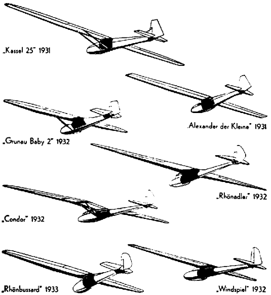
Fig. 33. Veleros de
los años 1931
a 1933
Otto
Fuchs, partiendo en vuelo remolcado, voló con apoyo térmico desde Berlín a Francfort
del Oder ; Groenhoff, con el mismo género de envuelo, va desde Munich a Kaaden (270 km.)
; Groenhoff, Hirth y Kronfeld vuelan, con ascendencia térmica, durante horas, en el
concurso del Rhön; después de partir también por remolque, Hirth vuela, con cielo
despejado y casi calma, desde la Wasserkuppe hasta el Rhin (193 km.). ¿ Por qué esta
enumeración ? El envuelo por remolque abre una ancha vía de posibilidades: grupos que no
disponían de terreno apropiado para volar a vela pueden hacer vuelos de marca. Se siente
pues la necesidad de disponer de veleros de entrenamiento y de concurso que sean baratos,
tanto para adquirirlos por compra como para su construcción por los mismos grupos. Así
al año siguiente aparecieron muchos tipos de velero para satisfacer el criterio más
importante: el de ser sencillos y baratos. Ciertamente que el hecho de reproducir los
veleros disponiendo de los planos hizo que se dejase de idear tipos nuevos en muchos
lugares, como ya se había visto cuando apareció el «Professor». Sin embargo, sin esta
baratura de la reproducción de tipos, como los « Grunau Baby », « Rhönbussard », «
Alexander der Kleine », « Rhönadler », « Condor », etc., no se habría llegado a la
actual expansión del vuelo a vela, como ya se vio en los años 1933 a 1935 (fig. 33).
Los talleres de aviones Kassel, bajo la dirección de
Kegel, mas tarde de Fieseler, construyeron los aparatos « Kassel 20 » y « Kassel 25 »,
que fueron proyectados para ser construidos en serie a precios económicos. Se podían
usar sin modificación muchas piezas del uno en la construcción del otro; los dos tipos
sólo se diferenciaban en las alas, que, además, podían indistintamente emplearse en uno
y otro.
En 1931 apareció el « Alexander der Kleine », un velero
de concurso para enseñanza que construyó el Akaflieg de Munich, pequeño y de poco peso;
monoplano de ala alta en voladizo, de 14 m. de envergadura, con alas de planta casi
rectangular. Era un aparato excelente para vientos flojos, con buenas características,
que también fue muy reproducido por los grupos.
Además, también apareció el mismo año el « Schlesien
in Not » del grupo Marcho-Silesia, de Breslau, en el que se destacaba el procedimiento
automático de unión de los timones.
Igualmente en ese año voló Hirth el « Musterle », que
representaba la evolución del « Lore », pertenecientes ambos a la escuela de Darmstadt.
El año 1932 fue también rico en novedades, estando en
primer plano el « Windspiel », del Akaflieg de Darmstadt, en vía de experimentación y
las numerosas reproducciones de tipos hechas por los grupos; en este ano surgió el «
Grunau Baby I », al que siguió el número 2, ambos productos de la colaboración de
Schneider y Wolf Hirth, apropiados para la ejecución de pequeños vuelos de concurso.
Dos modelos que fueron muy aceptados por los grupos y
siguen siéndolo actualmente son el « Rhönadler » y el « Condor », que salieron de la
escuela de la Wasserkuppe. Ambos aparatos, sin presentar nada de particular, son de
construcción sencilla y envergadura media, teniendo buenas características, y por estas
razones nos detendremos algo en ellos, ya que son los que en mayor número se emplean hoy,
tanto en Alemania como fuera de ella.
El «Rhönadler» fue proyectado por Hans Jacobs para los
talleres Schleicher, donde fue construido basándose en las experiencias recogidas con el
« Fafnir I » y llevando la mira de ser económico y sencillo en su organización y
montaje, dentro de tener buenas características (fig. 34), dejando de lado expresamente
todas las complicaciones que habrían encarecido su precio, y que se consiguió el fin
propuesto lo demuestra el precio de este aparato que actualmente es de 2000 marcos. El «
Rhönadler » es un monoplano de ala alta con alas de dos piezas, de forma recta,
francamente trapezoidal, muy afiladas hacia las puntas y con grandes alerones. Como perfil
se empleó una variante del « Gö 652 » con algo más de curvatura.
El « Condor » fue proyectado por el Dipl.-Ing. Fritz
Krämer y Heini Dittmar y construido por éste, para el concurso de 1932, con el apoyo de
los talleres de la Wasserkuppe.
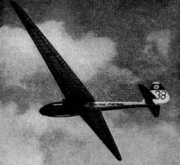
Fig. 34. El velero «
Rhönadler » en vuelo
Es un
monoplano de ala alta, de línea quebrada muy marcada, monolarguera, con nariz de
cerquillo rígida a la torsión y tornapuntas en V que
van al fuselaje. Para simplificar el proyecto, se utilizó el fuselaje y cola del «
Fafnir », con la correspondiente adaptación (fig. 35).
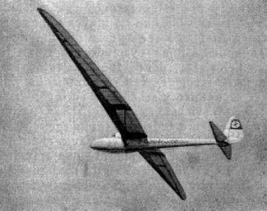
Fig. 35. El velero «
Condor » en el aire
En 1935
rehizo el proyecto el técnico Weimar dando lugar al « Condor II » pero quedando la
misma organización general; únicamente se empleó para el ala un perfil delgado y de
pequeña curvatura para mejorar la velocidad de descenso y el ángulo de planeo.
El « Windspiel » (fig. 36) es un pequeño velero de
concurso, construido por el Akaflieg de Darmstadt, cuya finalidad era utilizar la mínima
energía de una ascendencia, para lo cual era necesario, de una parte, facilidad de virar
y de otra parte, pequeña velocidad de descenso.
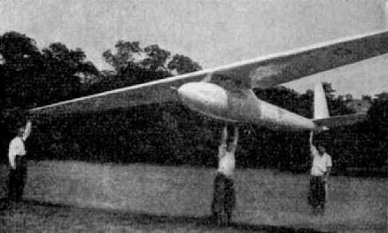
Fig. 36. El ligero
«Windspiel »
Dicho de
otro modo: con tal avión, en días de térmico se puede empezar a volar antes y dejar de
volar después que con otros aviones o, también: en días de térmicos menudos, en los
que un aparato de mucha envergadura no se puede sostener en el aire, este aparato, con su
virar ceñido, puede revolverse y utilizar los campos de ascendencia, obteniendo de ellos
la energía necesaria.
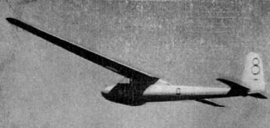
Fig. 37. El « Windspiel» en el aire
Otro punto
de vista de este pequeño y ligero aparato es que a causa de su poco peso, en vuelo tiene
muy poca inercia y el piloto se da cuenta de los más insignificantes movimientos del
aire, de modo que el piloto tiene en él, más que en ningún otro aparato, la sensación
de volar; mientras que en otros aparatos de mayor masa, lo que siente más bien el piloto
es que « es volado » por alguien. Estas consideraciones generales han sido pensadas por
los constructores Schomerus y Kosin y estas impresiones de « volar o ser volado » han
sido también atestiguadas por los pilotos Fischer y Hanna Reitsch (figura 37).
Estas ideas sobre el « Windspiel », avión de pequeña
envergadura y poco peso, pueden causar la impresión de que toda la evolución de los
veleros ha seguido un derrotero equivocado. Como siempre ocurre con las cuestiones
técnicas, se puede decir aquí también que es preciso considerar todas las
circunstancias, y así ocurre que en cada situación de tiempo se plantean problemas
distintos y no siempre el mismo avión representa la mejor solución de cada caso.
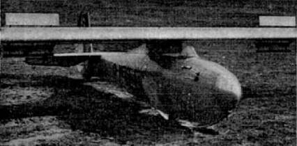
Fig. 38. El «
Rhönbussard » con los alerones de frenado del DES
Para el
problema planteado antes: aprovechar la energía de las mínimas ascendencias, el térmico
menudo, etc., es lo mejor un aparato pequeño y de poco peso; sin embargo, en situaciones
atmosféricas en las que se manifiestan ascendencias normales, viento térmico, frentes,
etc., el aparato de gran envergadura, y consiguiente ángulo de planeo mejor y mayor
amplitud de velocidades, resulta preferible respecto a un avión de pequeña envergadura,
como ha sido probado ampliamente por los resultados de los concursos del Rhön. Además,
hay que añadir que construir un avión con peso extremadamente reducido y pequeña
envergadura resulta más caro que un avión de construcción normal de envergadura media o
grande.
Este pequeño monoplano de ala alta de 12 m. de
envergadura, de ala trapecial de una sola pieza y con fuselaje fusiforme, todo con la
resistencia normal, fue construido con el reducido peso de 63 kg. Debería ahora seguir
una exposición detallada de todas las ideas y trabajos a que dio lugar la construcción
del « Windspiel », pero sólo se hará una mención de lo más esencial de ese aparato.
El ala es monolarguera, con borde de ataque rígido a la
torsión y los alerones se extienden a todo lo largo del borde de salida, pudiendo
reglarse por el piloto durante el vuelo, para acomodar el ala al vuelo lento o rápido. El
timón de dirección y los alerones tienen un mando diferencial combinado, de modo que,
automáticamente, la maniobra del primero lleva consigo la del mando transversal,
organización análoga a la empleada con éxito en el « Konsul ». La acción del timón
de dirección está reforzada por un plano giratorio que es arrastrado por el timón en su
movimiento y produce, unido a él, un perfil curvo. El piloto Fischer llevó a cabo una
serie de vuelos con el « Windspiel » que pusieron de manifiesto las buenas
características de este aparato.
Es interesante hacer notar, en relación con la pequeña
envergadura de este aparato, que en los años 1930 a 1932 se puso a discusión nuevamente
la cuestión de la limitación de la envergadura y hasta se quiso clasificar los veleros
en grupos, para conseguir por una parte un estímulo hacia la construcción de tipos de
pequeña envergadura y por otra impedir que se llegase a las envergaduras del « Austria
».
La cuestión de la clasificación de los veleros con el
criterio de la envergadura como base se ha adelantado por el progreso del arte de volar,
pues en el vuelo a vela térmico se ha visto que los veleros con envergadura grande
pierden la necesaria facilidad de virada, y por esto parece conveniente limitar la
envergadura a un valor medio de 16 m. y un máximo de 19 m., y sin embargo esto no debe
excluir el que se proyecten y construyan, en el futuro, veleros con envergadura grande, ya
para casos especiales o ya para fines de experimentación.
El « Rhönbussard » fué proyectado y construido por
Hans Jacobs, con el fin de servir, como el « Rhönadler », para ser un velero pequeño y
barato que se acomodase a ser construido en serie y a ser reproducido por los grupos de
aficionados. Las miras que se llevaron en el proyecto fueron las de conseguir con
envergadura pequeña características suficientes y facilidad de virar. La organización
del « Rhönbussard » es normal y ha resultado ser un velero pequeño y muy barato,
habiéndose alcanzado con él, en situaciones meteorológicas favorables, distancias hasta
de más de 300 km.
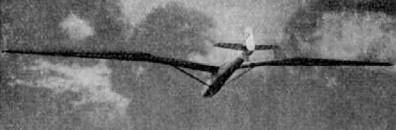
Fig. 39. El velero «
Moazagotl »
Wolf
Hirth, conocido por sus muchos y brillantes vuelos de marca, construyó en 1933 en
colaboración con el doctor Wenk, el « Moazagotl », el cual tiene un aspecto
característico por su ala fuertemente quebrada, ligera flecha y alerones muy retrasados,
aspecto que fue conservado en su continuador, el «Minimoa». La línea del ala quebrada,
su forma en flecha y el aumento de profundidad, que exigió un marcado alabeo en la
región de las aristas de los diedros, proporcionan a este tipo una buena estabilidad en
las viradas y buenas también las estabilidades de ruta y longitudinal, propiedades de
vuelo que son de gran valor para el vuelo sin visibilidad (fig. 39). Las alas tienen una
envergadura de 20 m.; son de dos piezas, monolargueras con nariz rígida a la torsión v
están arriostradas con un tornapunta a cada lado. Los esfuerzos de torsión se transmiten
al fuselaje por medio de una fuerte pieza que va en el arranque de las alas y una barra
diagonal de compresión que sale del larguero.
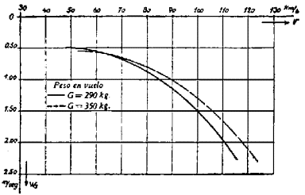
Fig. 40. El diagrama
hace ver la mejora obtenida en la velocidad de descenso, aumentando el peso en vuelo, en
los casos de gran velocidad de vuelo
Para
aumentar la carga superficial del ala y con ello, la velocidad de vuelo en los vuelos de
distancia, se puede llevar un lastre de agua que en el viaje puede arrojarse, siendo éste
un procedimiento de lograr esos fines que después ha sido empleado en otros muchos
veleros, pues, en determinadas situaciones meteorológicas, puede ser conveniente mejorar
la velocidad de crucero y la de descenso. En la figura 40 se representan dos diagramas de
velocidades, que corresponden a un mismo proyecto de aparato: con un aumento de 60 kg. de
lastre en el peso en vuelo, se obtiene la mejora que se ve en la curva para las grandes
velocidades de vuelo.
Del «Moazagotl» salió, como ya se ha dicho, en 1935-1936, el «Minimoa» para su
construcción en serie en los talleres de aviones deportivos Göppingen, y sobre este
aparato se darán después algunos detalles.
|